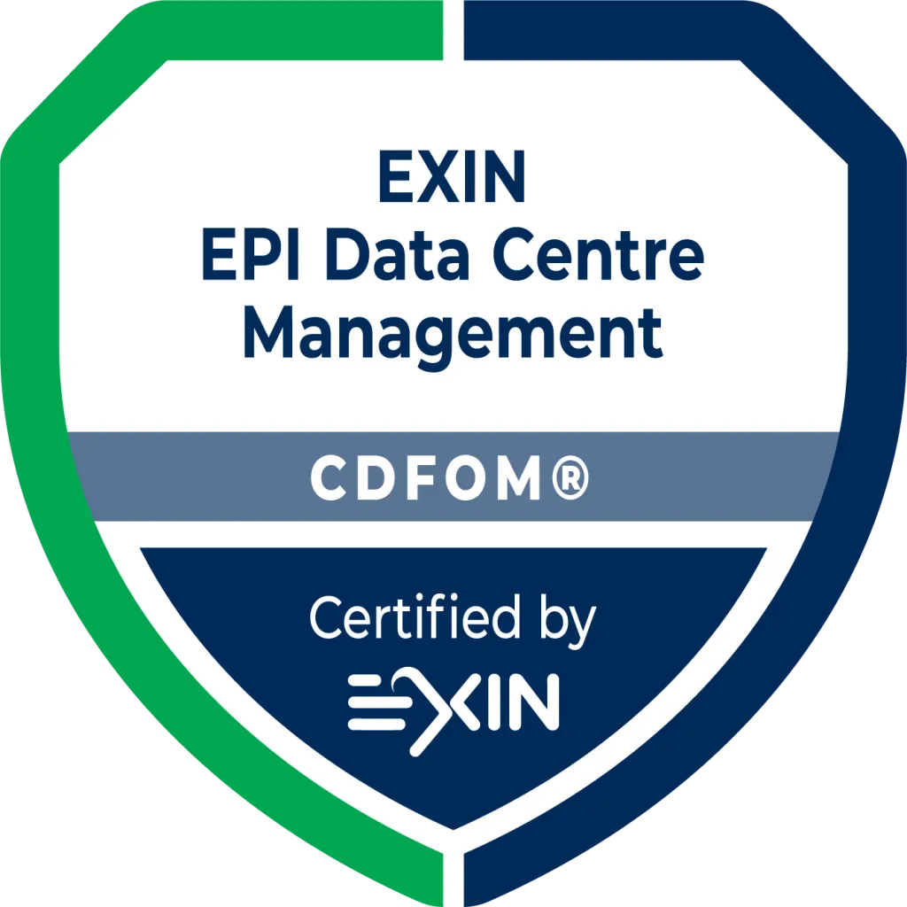

DC Solutions · Engineering & telemetry · 2026
Plan, cost and commission a data center before breaking ground.
Calculators, cockpits and labs for data-center engineers. Every number is computed in the browser from a published engine; nothing is stored and nothing asks you to sign up.
01 / Platforms
Two buildings, instrumented end to end.
Operator cockpits over a published engine: electrical, cooling, fire, fuel, water, ICT. Sign in to open the drawings.
DC AI / HPCGB300 NVL72 · 500 MW rack IT · warm-water liquid cooling
- 8 halls × 440 racks at 142 kW
- 150 / 20 / 0.4 kV four-level chain, 2N
- Dry-only plant on the free-cooling cliff, PUE 1.165
DC ConventionalAir-cooled hall · chiller plant · EPMS · fire, fuel, water, ICT
- Seven cockpits on one shared engine
- SLD and P&ID drawn by the diagram engine
- Alarm workspace with cause-and-effect
02 / Grid monitors
Where the power is, region by region.
PLN transmission monitors for siting AI/HPC capacity: substation headroom, generation mix, 500 / 275 / 150 kV topology.
03 / Calculators
Build, operate, compare, export.
Each row is one calculation with its unit and basis stated. Hover a row and its box lights in the chain; click a box to jump to its calculators.
- Cost and planning
- #A.01CAPEX calculator14 cost components · scenario A vs B · tier classification · PDF→
- #A.02OPEX calculator30+ countries · climate zones · staffing · energy and maintenance→
- #A.03DC MOCCAPEX + OPEX engine · shift optimisation · Monte Carlo · executive PDF→
- #A.04Cx calculatorL0–L6 commissioning lifecycle · Gantt · Monte Carlo · 8 archetypes→
- #A.05RFS readiness workbenchG0–G7 gate board · defect tracking · customer overlay · forecast→
- #A.06Spares readiness engineCritical spares, lead time and stock-out risk per system→
- Strategy and market
- #B.01TCO comparisonBuild vs colocation vs cloud, 2025–2030 projection→
- #B.02Market tracker25+ markets · capacity, pricing, pipeline→
- #B.03ROI calculatorInvestment decision with sensitivity on utilisation and tariff→
- Engineering and compliance
- #C.01PUE calculatorCooling type · climate zone · IT load distribution→
- #C.02Tier advisorUptime Tier I–IV · TIA-942 · EN 50600 · 12+ jurisdictions→
- #C.03TIA-942 checklist56 items · 4 tiers · weighted scoring and gap analysis→
- #C.04Carbon footprintGHG Protocol scope 1/2/3 · life-cycle · 33 countries→
- #C.05Fire suppression calculatorNFPA 2001 clean-agent sizing · NOAEL margin→
- #C.06Fire safety checklistDetection and suppression design bands · NFPA 855 batteries→
- #C.07Liquid-cooling CDU toolkitSelection guide · maintenance checklist · mini-BMS · comparison→
- #C.08Air vs liquid coolingDX · chilled water · RDHx · direct-to-chip for AI/HPC loads→
- #C.09Raised floor vs slabPlenum vs overhead · load capacity · retrofit cost→
04 / Knowledge
Labs, standards and the methods behind every number.
Parameter-driven labs for the disciplines you otherwise read as PDFs, and the technical manuals that publish each engine's formulas.
- Labs
- #L.01Standards + liquid-to-chip labANSI/TIA-942 · ASHRAE TC 9.9 · ISO 50001 · NFPA · Uptime engines→
- #L.02Liquid-to-chip system modelling labCDU · manifold · chip stack · acceptance · DH01 CFD→
- #L.03Network visualization hubModbus · BACnet · OPC-UA · DNP3 · PROFINET · TLS · APIs, animated→
- #L.04AI engineering maintenanceFMECA + knowledge graph · 109 fault modes · ML advisor concept→
- Papers and pillars
- #P.01Data center power distribution designTechnical paper · hyperscaler architecture, 2026→
- #P.02Cooling systemsAir · chilled water · direct liquid · free cooling · PUE→
- #P.03Power systemsUPS · generators · switchgear · PDU · N+1 · grid connection→
- #P.04Standards and complianceTIA-942 · Uptime · EN 50600 · ISO 27001 · ASHRAE→
- #P.05Fire safetyNFPA 75/76 · VESDA · clean agent · compartmentation→
- #P.06SustainabilityPUE · WUE · CUE · renewable PPA · ISO 50001 · net zero→
- #M.00Technical manualsFormulas and methodology for every engine on this site→
05 / About
Built by a certified data-center engineer.
The tools are based on operational experience and the standards named below. They are educational: a design still needs its own engineer of record.

CDFOM — Certified Data Centre Facilities Operations Manager Ahli K3 Listrik — electrical safety expert, Indonesia
Ahli K3 Listrik — electrical safety expert, Indonesia SKTTK L6 — competent manager
SKTTK L6 — competent manager High- and low-voltage authorised person · senior authorised person
High- and low-voltage authorised person · senior authorised person IOSH Managing Safely
IOSH Managing Safely
Standards used
Are the calculators really free to use?+
Yes. No signup, no account and no paywall; everything runs in your browser. The gated cockpits and labs need a sign-in because they are root-access reference models.
How accurate are the cost estimates?+
Planning-grade. Every coefficient carries its source and date in the technical manuals; use the output to size a decision, not to replace a quantity surveyor or an engineer of record.
What standards are the tools based on?+
ASHRAE TC 9.9, TIA-942, Uptime Institute tiers, EN 50600, ISO 50001, ISO 27001, NFPA 75 / 76 / 2001 / 855 and the GHG Protocol. Each tool names the clauses it uses.
Can I export results as PDF?+
The calculators export PDF and CSV from the page. Nothing is sent to a server.
Who built these tools?+
Bagus Dwi Permana, an engineering operations manager with twelve years in hyperscale data centers and high-voltage plant, CDFOM and Ahli K3 Listrik certified.
Do you store my calculation data?+
No. Inputs stay in your browser; a saved scenario lives in your own local storage.
Fig. 0.0 — the campus, drawn from the engine. Scroll: the camera follows.
Fig. 0.1 — the building plate, genset yard and plant bands. Two cockpits, one engine.
Fig. 0.2 — transmission tiers into the GIS. The grid monitors start here.
Fig. 0.3 — utility to IT load, one hall. Hover a row: its box lights. Click a box: its calculators.
Fig. 0.4 — the standards every design above has to satisfy.
Fig. 0.0 — the whole site again. 412 × 231 m is an engine output, not a sketch.